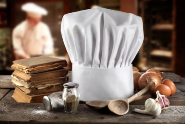
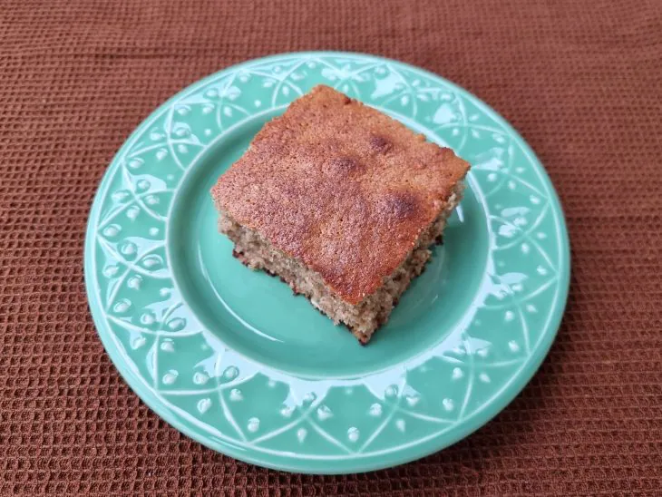

Culinária Para Aprender
Bolo de banana com aveia fácil
- 5 bananas (reserve uma para decorar)
- 4 ovos
- 1 xícara de chá de açúcar demerara
- 1/2 xícara de chá de óleo
- 1 colher de sopa de canela
- 1 colher de sopa de fermento em pó
- 200 gramas de aveia em flocos finos
- Opcional: castanha de caju ou do pará picadinha e uvas passas

Modo de Preparo
- Reúna todos os ingredientes;
- No liquidificador, bata os ovos, o óleo, o açúcar e 4 das 5 bananas. Deixe uma para colocar picadinha na massa;
- Coloque essa mistura em uma tigela e acrescente a aveia, a canela, o fermento e 1 banana picada. Misture delicadamente;
- Leve para assar em uma forma untada com manteiga ou óleo e polvilhada com açúcar, em um forno preaquecido a 180ºC, por 40 minutos ou até dourar;
- Espere amornar e desenforme. Agora é só servir, bom apetite!
